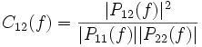

Coherence
Contributions
Contents |
Synopsis
The CoherenceFilter computes magnitude squared coherence between its input signals at a set of frequencies. The CoherenceSignalProcessing module computes a coherence-based feedback signal, including the SpatialFilter, LinearClassifier, and Normalizer processing stages.
Location
http://www.bci2000.org/svn/trunk/src/contrib/SignalProcessing/Coherence
Versioning
Author
juergen.mellinger@uni-tuebingen.de
Source Code Revisions
- Initial development: 3340
- Tested under: 3340
- Known to compile under: 3340
Functional Description
The CoherenceFilter computes magnitude squared coherence between pairs of input channels, applying the following computational steps:
- Maintaining a buffer of past data.
- Computing a time series of complex-valued Fourier coefficients a(f,t) for a Fourier window moving over the data buffer with a specified window overlap. Windowing is done using a Hamming window.
- Computing the magnitude squared coherence between coefficient time series for different channels.
With P12(f) denoting the inner product of coefficient time series a1(f,t) and a2(f,t):
 ,
,
the magnitude squared coherence between channel 1 and channel 2 at frequency f is computed as:
.
In the output signal, channels correspond to pairs of input channels, enumerated by scanning the lower half of the channels-by-channels matrix in a row-wise manner: 21, 31, 32, 41, 42, 43, 51, 52, 53, 54, ...
For a more convenient configuration of the LinearClassifier filter, output channels are labeled, constructing labels from the labels of the input channels. Labels are formed like this: Coh-foo-bar when "foo" is the label of input channel 1, and "bar" is the label of input channel 2.
Elements in the output signal correspond to the frequencies given in the CohFrequencies parameter, and are labeled by the values entered there.
Parameters
CohBufferLength
Length of the past data buffer over which coherence is computed, in seconds (when followed with "s"), or blocks.
CohWindowLength
Length of the Fourier window moving over the data buffer, in seconds (when followed with "s"), or blocks.
CohWindowOverlap
Overlap between subsequent windows, in seconds (when followed with "s"), or blocks.
CohFrequencies
List of frequencies where coherence is evaluated, corresponds to elements in the output signal.
![[BCI2000 Help]](../../images/bci2000logo_small.png)